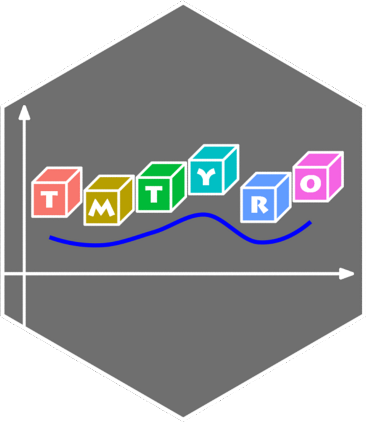

Customizing tables
Leveraging gt and tinytable
Source:vignettes/articles/05-customizing-tables.Rmd
05-customizing-tables.RmdThe standard tmtyro workflow, with functions like
add_vocabulary() and add_sentiment(), works
easily with tabulize() to generate clean, useful tables
that communicate results effectively. These tables are designed to help
users focus on their work without needing to worry about formatting,
presentation, or code. For those advancing beyond the tyro stage,
learning to customize this output or even to create tables from scratch
can be a valuable next step.
Starting from tabulize()
The tables tmtyro creates offer a good starting point for anyone
interested in learning more about gt and related packages. Since
tabulize() creates standard gt tables, they can be modified
using standard functions from that package or from extension packages
like gtExtras.
Alignment
By default, character columns in tables prepared by
tabulize() are left aligned. To adjust this alignment, use
gt’s cols_align() function.
library(dplyr)
library(gt)
library(tmtyro)
corpus_dubliners <- get_gutenberg_corpus(2814) |>
load_texts() |>
identify_by(part) |>
standardize_titles() |>
select(doc_id, word)
# Choose just 5 stories
some_docs <- unique(corpus_dubliners$doc_id)[c(1:3, 12, 15)]
corpus_dubliners <- corpus_dubliners |>
filter(doc_id %in% some_docs)
# tabulize() typically left-aligns text columns
corpus_dubliners |>
tabulize()| Words | |
|---|---|
| The Sisters | 3,113 |
| An Encounter | 3,257 |
| Araby | 2,345 |
| Ivy Day in the Committee Room | 5,249 |
| The Dead | 15,731 |
# cols_align() adjusts alignment
corpus_dubliners |>
tabulize() |>
cols_align(
align = "center",
columns = doc_id)| Words | |
|---|---|
| The Sisters | 3,113 |
| An Encounter | 3,257 |
| Araby | 2,345 |
| Ivy Day in the Committee Room | 5,249 |
| The Dead | 15,731 |
Themes
Outputs can be highly customized using themes built into packages like gtExtras.
library(gtExtras)
corpus_dubliners |>
tabulize() |>
gt_theme_excel()| Words | |
|---|---|
| The Sisters | 3,113 |
| An Encounter | 3,257 |
| Araby | 2,345 |
| Ivy Day in the Committee Room | 5,249 |
| The Dead | 15,731 |
Many theme options are available, adjusting coloring, font face, and
text size. They’re easy to add with functions beginning
gt_theme_...():
corpus_dubliners |>
tabulize() |>
gt_theme_538()| Words | |
|---|---|
| The Sisters | 3,113 |
| An Encounter | 3,257 |
| Araby | 2,345 |
| Ivy Day in the Committee Room | 5,249 |
| The Dead | 15,731 |
For more theme options, see the gtExtras documentation online.
Titles and Summary Rows
The examples shown here barely scratch the surface of options
available with gt. Summary rows, added with
grand_summary_rows() make it easy to share corpus
statistics. Titles and subtitles, added with tab_header(),
help clarify conclusions and a main takeaways:
corpus_dubliners |>
tabulize() |>
grand_summary_rows(
fns = list("avg" ~ mean(.) |>
scales::label_comma(accuracy = 0.1)()),
columns = "n") |>
tab_header(
title = md("Word counts in *Dubliners* stories"),
subtitle = "“The Dead” is about three times the average length.") |>
opt_align_table_header("left")| Word counts in Dubliners stories | ||
| “The Dead” is about three times the average length. | ||
| Words | ||
|---|---|---|
| The Sisters | 3,113 | |
| An Encounter | 3,257 | |
| Araby | 2,345 | |
| Ivy Day in the Committee Room | 5,249 | |
| The Dead | 15,731 | |
| avg | — | 5,939.0 |
Going further
Combining these methods with those explained in greater depth in gt’s documentation can allow for truly customized tables. The default table, for instance, is functional but not necessarily pretty. Customization makes it possible to aim for something clean like this:
corpus_dubliners |>
tabulize() |>
tab_style(
style = cell_borders(
sides = "all",
color = NULL),
locations = cells_body()) |>
tab_style(
style = cell_text(size = pct(70)),
locations = cells_column_labels()
) |>
cols_align(
align = "right",
columns = doc_id) |>
opt_css(
css = ".gt_col_headings {border-bottom-color: #FFFFFF !important;}"
)| Words | |
|---|---|
| The Sisters | 3,113 |
| An Encounter | 3,257 |
| Araby | 2,345 |
| Ivy Day in the Committee Room | 5,249 |
| The Dead | 15,731 |
Starting with gt
tmtyro’s tabulize() only works with a standard workflow
using functions like add_vocabulary() and
add_frequency(). Preparing similar tables manually is
possible with familiarity with packages like gt or tinytable. A few
methods for creating and modifying gt tables are shown below, but more
are found in package
documentation.
Corpus details
By default, a corpus prepared by tmtyro will tabulize()
into a table showing word counts for each document. A simple version of
this can be prepared by hand with very little effort:
| doc_id | n |
|---|---|
| The Sisters | 3113 |
| An Encounter | 3257 |
| Araby | 2345 |
| Ivy Day in the Committee Room | 5249 |
| The Dead | 15731 |
Once the table is prepared, gt allows for further tweaking—for
instance, to format word counts for readability, hide the
doc_id column header, and rename n as
words:
gt_details |>
fmt_integer(n) |>
cols_label(
doc_id = "",
n = "words")| words | |
|---|---|
| The Sisters | 3,113 |
| An Encounter | 3,257 |
| Araby | 2,345 |
| Ivy Day in the Committee Room | 5,249 |
| The Dead | 15,731 |
Word frequencies
The standard workflow for preparing a polished table of
high-frequency word counts with
tmtyro—add_frequency() |> tabulize()—will easily show a
few of the most used words in each document. To use
get_frequency() when adding columns for word counts, a
chain of functions will prepare a summary
table—distinct() |> slice_max(). Once it’s ready,
gt() will do the rest.
dubliners_count <- corpus_dubliners |>
group_by(doc_id) |>
mutate(
n = get_frequency(word)) |>
ungroup() |>
distinct() |>
slice_max(
order_by = n,
by = doc_id,
n = 3) # show three words each
gt_counts <- dubliners_count |>
# limit to three stories for a shorter display
filter(doc_id %in% c("The Sisters", "An Encounter", "The Dead")) |>
gt()
gt_counts| doc_id | word | n |
|---|---|---|
| The Sisters | the | 171 |
| The Sisters | and | 118 |
| The Sisters | to | 94 |
| An Encounter | the | 181 |
| An Encounter | and | 107 |
| An Encounter | he | 101 |
| The Dead | the | 866 |
| The Dead | and | 570 |
| The Dead | of | 396 |
The cols_label() function from gt can adjust headers,
and tmtyro’s collapse_rows() function hides repeated values
in a column:
gt_counts |>
cols_label(doc_id = "") |>
collapse_rows(doc_id)| word | n | |
|---|---|---|
| The Sisters | the | 171 |
| and | 118 | |
| to | 94 | |
| An Encounter | the | 181 |
| and | 107 | |
| he | 101 | |
| The Dead | the | 866 |
| and | 570 | |
| of | 396 |
Choosing to adjust things manually introduces a steeper learning curve, but it also allows for greater customization:
dubliners_count |>
filter(doc_id %in% c("The Sisters", "An Encounter", "The Dead")) |>
gt(groupname_col = "doc_id") |>
cols_label(
word = "") |>
data_color(columns = n, palette = "PuBuGn") |>
tab_style(
style = cell_text(weight = "bold"),
locations = cells_row_groups())| n | |
|---|---|
| The Sisters | |
| the | 171 |
| and | 118 |
| to | 94 |
| An Encounter | |
| the | 181 |
| and | 107 |
| he | 101 |
| The Dead | |
| the | 866 |
| and | 570 |
| of | 396 |
Dictionary matches, including for sentiment, follow the same pattern.
Vocabulary richness
A similar manual workflow can be used to prepare tables of vocabulary
richness. Without customization, gt() prepares a table that
isn’t as clear as it could be:
dubliners_vocab <- corpus_dubliners |>
filter(doc_id %in% c("The Sisters", "An Encounter", "The Dead")) |>
group_by(doc_id) |>
summarize(
words = n(),
vocab_count = sum(is_new(word)),
ttr = last(get_ttr(word)),
hapax_count = sum(is_hapax(word)),
htr = last(get_hir(word))) |>
ungroup()
gt_vocab <- dubliners_vocab |>
gt()
gt_vocab| doc_id | words | vocab_count | ttr | hapax_count | htr |
|---|---|---|---|---|---|
| The Sisters | 3113 | 903 | 0.2900739 | 552 | 0.17732091 |
| An Encounter | 3257 | 980 | 0.3008904 | 620 | 0.19035923 |
| The Dead | 15731 | 2746 | 0.1745598 | 1557 | 0.09897654 |
Here, tab spanners can be added to approximate the version created by a typical tmtyro workflow:
gt_vocab |>
tab_spanner(
label = "vocabulary",
columns = c("vocab_count", "ttr")) |>
tab_spanner(
label = "hapax",
columns = c("hapax_count", "htr")) |>
cols_label(
vocab_count = "total",
ttr = "ratio",
hapax_count = "total",
htr = "ratio") |>
fmt_number(c(ttr, htr), decimals = 3)| doc_id | words |
vocabulary
|
hapax
|
||
|---|---|---|---|---|---|
| total | ratio | total | ratio | ||
| The Sisters | 3113 | 903 | 0.290 | 552 | 0.177 |
| An Encounter | 3257 | 980 | 0.301 | 620 | 0.190 |
| The Dead | 15731 | 2746 | 0.175 | 1557 | 0.099 |
Starting with tinytable
Of course, many other options exist in R for preparing tables to
communicate findings. One of these, tt() from the tinytable
package, is worth consideration. A few methods for preparing tinytable
tables are shown here, but more are found in package
documentation.
Corpus details
The standard function for using tinytable is tt():
| doc_id | n |
|---|---|
| The Sisters | 3113 |
| An Encounter | 3257 |
| Araby | 2345 |
| Ivy Day in the Committee Room | 5249 |
| The Dead | 15731 |
Adjusting this output is straightforward using a few functions that
use a standard syntax. Each references rows with the argument “i” and
columns with the argument “j”. Data format is adjusted using
format_tt(), and output style is modified with
style_tt(). For instance, to change the number format in
the “n” column shown here, use format_tt() like this:
details_tt <- details_tt |>
format_tt(
j = 2,
digits = 0,
num_mark_big = ",")
details_tt| doc_id | n |
|---|---|
| The Sisters | 3,113 |
| An Encounter | 3,257 |
| Araby | 2,345 |
| Ivy Day in the Committee Room | 5,249 |
| The Dead | 15,731 |
Column names are adjusted using the standard colnames()
or setNames() functions from R:
| words | |
|---|---|
| The Sisters | 3,113 |
| An Encounter | 3,257 |
| Araby | 2,345 |
| Ivy Day in the Committee Room | 5,249 |
| The Dead | 15,731 |
Properties like column alignment can be adjusted with
style_tt():
details_tt |>
style_tt(
j = 2,
align = "r"
)| words | |
|---|---|
| The Sisters | 3,113 |
| An Encounter | 3,257 |
| Araby | 2,345 |
| Ivy Day in the Committee Room | 5,249 |
| The Dead | 15,731 |
Word frequencies
While tmtyro offers collapse_rows() to limit repeated
values in gt tables, these need to be suppressed manually using
tinytable’s rowspan argument in
style_tt():
dubliners_count |>
group_by(doc_id) |>
slice_head(n = 3) |>
ungroup() |>
tt() |>
style_tt(
i = c(1, 4, 7, 10, 13),
j = 1,
rowspan = 3,
alignv = "t")| doc_id | word | n |
|---|---|---|
| The Sisters | the | 171 |
| The Sisters | and | 118 |
| The Sisters | to | 94 |
| An Encounter | the | 181 |
| An Encounter | and | 107 |
| An Encounter | he | 101 |
| Araby | the | 190 |
| Araby | i | 96 |
| Araby | and | 70 |
| Ivy Day in the Committee Room | the | 320 |
| Ivy Day in the Committee Room | a | 144 |
| Ivy Day in the Committee Room | mr | 141 |
| The Dead | the | 866 |
| The Dead | and | 570 |
| The Dead | of | 396 |
Unfortunately, this process of manually indicating rows is fiddly and
prone to error. Any miscount will make the table misrepresent the data.
As an alternative, consider adjusting the underlying table before using
tt() to cut out repeating values, using
mutate(), case_when(), and
lag():
dubliners_count |>
group_by(doc_id) |>
slice_head(n = 3) |>
ungroup() |>
mutate(
doc_id = case_when(
doc_id == lag(doc_id) ~ "",
TRUE ~ doc_id
)) |>
tt()| doc_id | word | n |
|---|---|---|
| The Sisters | the | 171 |
| and | 118 | |
| to | 94 | |
| An Encounter | the | 181 |
| and | 107 | |
| he | 101 | |
| Araby | the | 190 |
| i | 96 | |
| and | 70 | |
| Ivy Day in the Committee Room | the | 320 |
| a | 144 | |
| mr | 141 | |
| The Dead | the | 866 |
| and | 570 | |
| of | 396 |
Alternatively, use automatic grouping, indicating rows with
group_tt():
count_table <- dubliners_count |>
group_by(doc_id) |>
slice_head(n = 3) |>
ungroup()
# Drop the doc_id column with select(), then reference it in group_tt()
my_tt <- count_table |>
select(-doc_id) |>
tt() |>
group_tt(i = as.character(count_table$doc_id))
my_tt| word | n |
|---|---|
| The Sisters | The Sisters |
| the | 171 |
| and | 118 |
| to | 94 |
| An Encounter | An Encounter |
| the | 181 |
| and | 107 |
| he | 101 |
| Araby | Araby |
| the | 190 |
| i | 96 |
| and | 70 |
| Ivy Day in the Committee Room | Ivy Day in the Committee Room |
| the | 320 |
| a | 144 |
| mr | 141 |
| The Dead | The Dead |
| the | 866 |
| and | 570 |
| of | 396 |
To format these group rows, we can use the attribute
my_tt@group_index_i to get the row numbers:
my_tt |>
style_tt(
i = my_tt@group_index_i,
bold = TRUE,
background = "lightgreen")| word | n |
|---|---|
| The Sisters | The Sisters |
| the | 171 |
| and | 118 |
| to | 94 |
| An Encounter | An Encounter |
| the | 181 |
| and | 107 |
| he | 101 |
| Araby | Araby |
| the | 190 |
| i | 96 |
| and | 70 |
| Ivy Day in the Committee Room | Ivy Day in the Committee Room |
| the | 320 |
| a | 144 |
| mr | 141 |
| The Dead | The Dead |
| the | 866 |
| and | 570 |
| of | 396 |
Vocabulary richness
Tables for reporting vocabulary richness often need a lot of
customizing. By default, tt() prepares a table that leaves
a lot to be desired:
tt_vocab <- dubliners_vocab |>
tt()
tt_vocab| doc_id | words | vocab_count | ttr | hapax_count | htr |
|---|---|---|---|---|---|
| The Sisters | 3113 | 903 | 0.2900739 | 552 | 0.17732091 |
| An Encounter | 3257 | 980 | 0.3008904 | 620 | 0.19035923 |
| The Dead | 15731 | 2746 | 0.1745598 | 1557 | 0.09897654 |
Among other things, we might want to adjust number formatting with
format_tt(), set alignment with style_tt(),
rename columns using colnames() or setNames(),
and add labels over column groupings with group_tt():
tt_vocab |>
group_tt(
j = list(
"vocabulary" = 3:4,
"hapax" = 5:6)) |>
format_tt(
j = c(2:3, 5),
digits = 0,
num_mark_big = ",") |>
style_tt(
j = c(2:3, 5),
align = "r") |>
format_tt(
j = c(4, 6),
digits = 3,
num_fmt = "decimal",
num_zero = TRUE) |>
setNames(c("", "words", "total", "ratio", "total", "ratio"))| vocabulary | hapax | ||||
|---|---|---|---|---|---|
| words | total | ratio | total | ratio | |
| The Sisters | 3,113 | 903 | 0.290 | 552 | 0.177 |
| An Encounter | 3,257 | 980 | 0.301 | 620 | 0.190 |
| The Dead | 15,731 | 2,746 | 0.175 | 1,557 | 0.099 |
In the end, none of this is overwhelming, and results can be clearly prepared for communication.